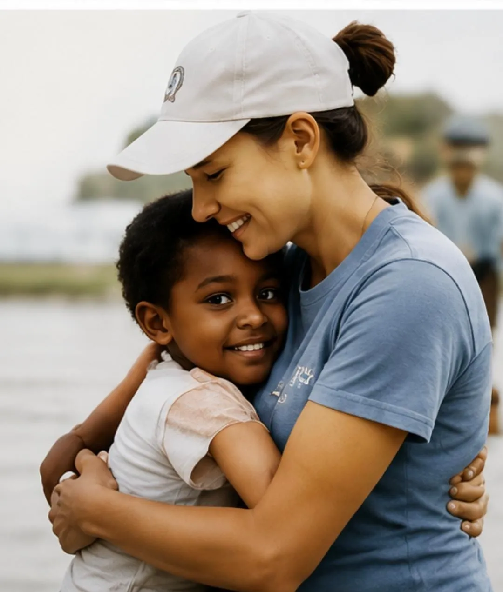
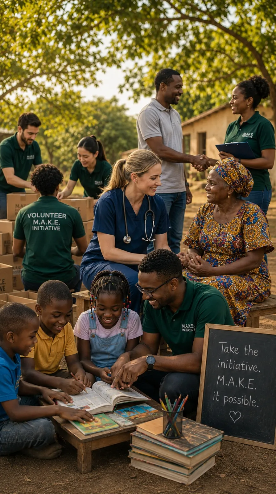
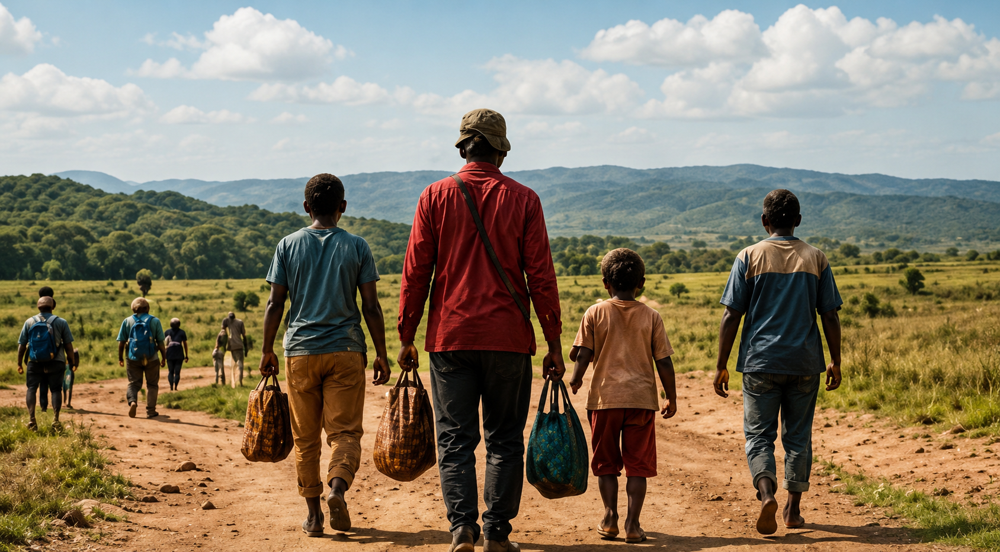
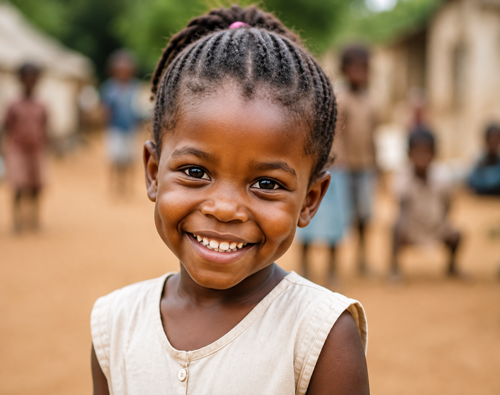
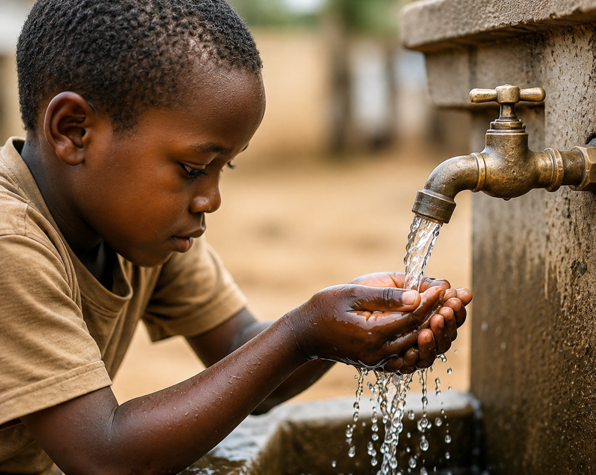

+
Areas of Impact
MAKE INITIATIVE


M.A.K.E. Initiative Foundation is a nonprofit organization founded on the belief that the strongest work is work that leaves something behind: greater access, greater knowledge, greater capacity, and stronger partnerships.
M.A.K.E. Initiative Foundation is built around action and execution. Healthcare is an important part of our Foundation, but meaningful change goes beyond immediate intervention. Education and training can build knowledge and capacity. Partnerships can extend what is possible. Resources, infrastructure and community support can help strengthen the environments in which people live and work.
Education and training can build knowledge and capacity. Partnerships can extend what is possible. Resources, infrastructure and community support can help strengthen the environments in which people live and work.
Our work may take different forms, but the purpose remains the same: to take on work that matters and make it impactful.
Our first initiative is only the beginning.
We don’t do this work alone. Donors, volunteers, professionals, businesses and partners each contribute something that can help make an initiative possible.





Areas of Impact
Limited access to resources, expertise and opportunities can create significant challenges for underserved and vulnerable populations. We believe meaningful change is possible when the right support reaches the people and communities who need it.
Access to quality healthcare is not equal everywhere. In many communities, the challenge is not simply having a healthcare facility, it’s having the expertise, equipment, supplies and support needed to provide the right care. M.A.K.E. Initiative Foundation works with healthcare professionals, institutions and partners to help bridge these gaps and make meaningful care possible.

Supporting eye care, vision restoration, surgical services and initiatives aimed at reducing avoidable blindness.

Supporting knowledge-sharing, clinical education and capacity-building among healthcare professionals.
Grenada/ October 2026
Bringing cataract surgery, surgical expertise and essential ophthalmic resources to communities where restoring sight can restore independence, opportunity and quality of life.

The goal isn’t simply to provide care today. It’s to help create the condition for better care tomorrow. We support initiatives that strengthen the people, systems and resources already within a community, so that the impact of an intervention can continue long after we leave. Because the strongest measure of our work isn’t how much we bring with us. It’s what remains when we’re gone.

Ready to contribute? Take the initiative.
Get InvolvedM.A.K.E. Initiative is a nonprofit organization focused on mobilizing access, knowledge and expertise to help address important needs in underserved and vulnerable communities.
Healthcare is at the heart of M.A.K.E. Initiative. Our work extends beyond direct care to include education and training, partnerships, community support, resources and infrastructure, and responses to emerging needs.
The Grenada Cataract Mission is M.A.K.E. Initiative's inaugural initiative. It brings together a specialized clinical team, healthcare partners and the support needed to expand access to cataract surgery and help prevent avoidable blindness in Grenada. The mission is planned for October 2026.
There are many ways to support M.A.K.E. Initiative, including volunteering, providing professional expertise, donating supplies or equipment, becoming a corporate supporter, supporting an initiative, or joining a mission.
Donors, volunteers, healthcare professionals, businesses, organizations and community partners can each contribute resources, expertise or support to help make an initiative possible.

